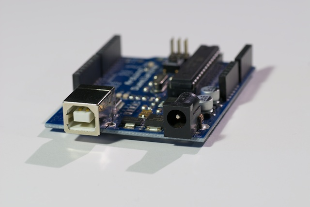
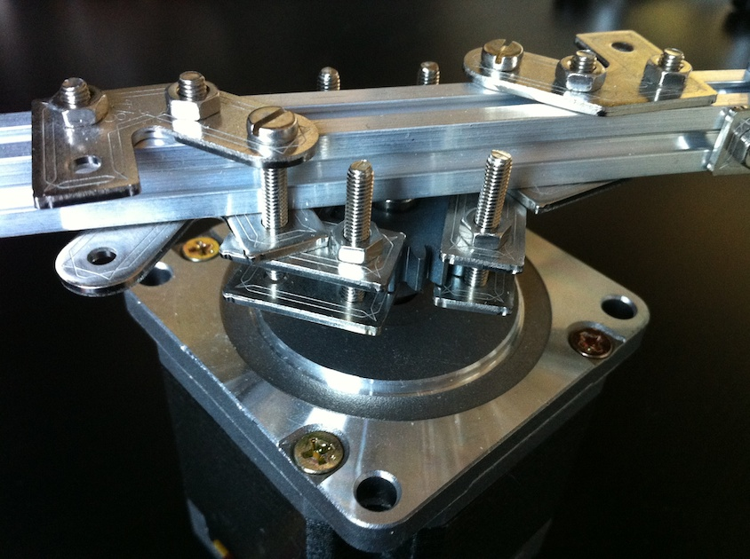
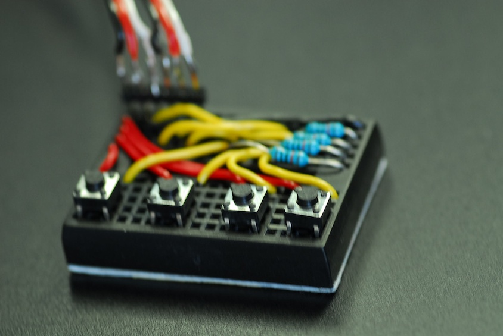
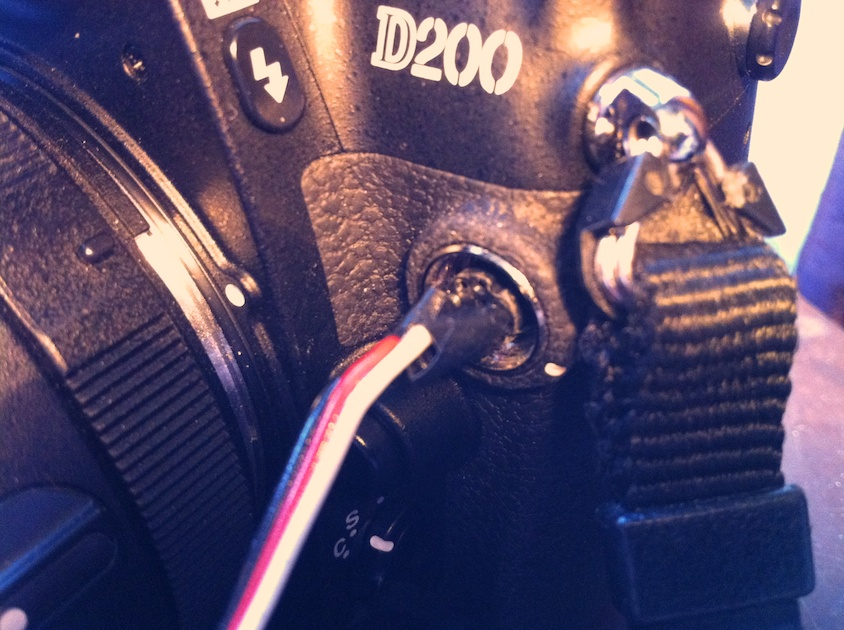

360 image capture with Arduino and Nikon D200
Arduino based image capture program to create product photos and similar. It controls a stepper motor that rotates a Maker Beam platform and camera remote control input.
See it in action on YouTube.
The project
This is a simple Arduino project for creating multiple images of a of an object, suitable for product displays and similar. It uses a simple program to rotate the product platform and to control the camera. The complete program is available at https://github.com/roxen/360-capture/blob/master/three_sixty_stepper/three_sixty_stepper.ino.
I created this because we needed good example images for a project at work. It was hard to find any good ones and we did not want to steal from Apple.
Drag sideways on the image below for a demo!
This is a video showing the setup and the shooting of a series of images.
The setup
I used a Nikon D200 on tripod with a Tamron 90mm macro lens shooting directly into Apple Aperture on a MacBook Pro using a usb cable. Rotating platform is in the back with a white paper sheet on it and the Arduino board and accompanying stuff to the right of it. Power unit for the stepper motor to the right of that.

The electronics
Arduino board at the top, Big EasyDriver to the right and relay to the left (the small black piece).

The platform
Maker Beams attached to the motor head. These beams make up the rotating platform and serves as holder for the hard paper sheet I used. See the video for details.

The control panel
The two buttons on the right rotates the motor clockwise and counterclockwise. This allows for tuning the start position. The second button from the left triggers the taking of a photo. This can obviously be done from the camera itself, but using this button you can test the setup. The leftmost button starts the capturing sequence, rotating the board and taking pictures. How much the board rotates between each shot depends on how many pictures you set the program to take.

Note that the board is a bit overly complicated (with the resistors and all), as I did not realize you could use the built in pull up resistors of the Arduino connections. See my Polar plotter project for more on that.
Controlling the camera
I used a Nikon D200 for this project. It has a ten pin terminal for its remote control. I have a MC-30 remote control, which is the cheaper of the Nikon branded controls. Most tips on remote controlling your camera involves cutting the cord of your remote control. As the MC-30 is $100 I did not want to do that. The connection requires three pins and I used a servo cable and attached three pins to the ends and just stuck them into the camera. This might not be feasible or recommended for all types of connections.

Most camera models seem to be controlled in the same way. They require three pins where one is the focus signal, on is the shutter signal and the third is ground. There are a few good sources with listings on how to connect different camera models. See http://www.doc-diy.net/photo/remote_pinout/ or http://www.hiviz.com/kits/instructions/rsr_inst.htm. I used an Omron single pole relay connecting both focus and shutter at the same time. If I was to do the project again, I would have used a two pole relay and trigger focus first and then the shutter. The camera bahaved a bit weird at times with this setup.
Camera settings
Note that the camera should be set to use manual mode. You don't want the camera to do light measurements for each and every image because you might get different exposure times, meaning the images will look different. You only want the angle of the photographed object to change between images.
If I was to do the project again, I'd use a glossier surface, get better lighting and overexpose the images so that the white surface would get all white.
The 360 JavaScript
There are several javascript libraries out the to create a 360 viewer from a set of images. See this list for a few examples. Many are crappy or overly complicated though. The demo above uses a home grown script. View the source of this page for details.
Number of images to shoot
This is of course a tradeoff between rotation smoothness and data size. The demo above uses 36 images, meaning there is only a 10 degree gap between each image. The page is quite heavy to load though, which you might have noticed when you got here.
comments powered by Disqus